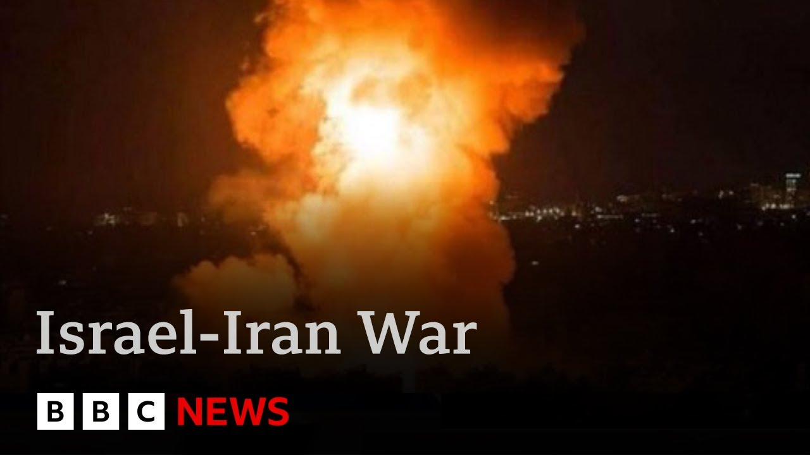

【伊朗警告美国攻击将给该地区带来“地狱”，特朗普称谈判仍有可能 | BBC新闻】
Summary: President Trump said he would decide within two weeks whether to join Israel in strikes against Iran. A White House spokesperson stated that Trump believes there is a strong possibility of negotiating with Tehran to end the conflict. This follows another day of missile exchanges between Israel and Iran. Today, nearly 300 people were injured in Israel, more than 70 of them hurt when a hospital was hit. Iran warned the United States not to get involved in the conflict, saying it would bring hell to the entire region. Our North America editor Sarah Smith reports from Washington.
摘要： 特朗普总统表示将在两周内决定是否加入以色列对伊朗的打击。白宫发言人表示特朗普认为与德黑兰就结束冲突进行谈判的可能性很大。此前以色列与伊朗又进行了一天的导弹互射。今天以色列有近300人受伤，其中70多人是在医院被击中时受伤的。伊朗警告美国不要卷入冲突，称这将给整个地区带来地狱。我们的北美编辑莎拉·史密斯在华盛顿报道。

⏱️ Estimated Reading Time: 17 min
📚 六级生词 📚 雅思生词 📚 托福生词 📚 专八生词 📚 SAT生词 📚 考研生词 📚 GRE生词 📚 高考生词
President Trump says he will make a decision on whether to join Israel's strikes on Iran within the next two weeks.
特朗普总统表示将在两周内决定是否加入以色列对伊朗的打击。
The White House press secretary said Donald Trump thought there was a substantial chance of negotiations with Tehran over ending the conflict.
白宫发言人表示特朗普认为与德黑兰就结束冲突进行谈判的可能性很大。
It came at the end of another day of missile exchanges between Israel and Iran.
此前以色列与伊朗又进行了一天的导弹互射。
Almost 300 people were injured in Israel today, including more than 70 when a hospital was hit.
今天以色列有近300人受伤，其中70多人是在医院被击中时受伤的。
Iran has warned the United States not to get involved in the conflict, saying it would result in hell for the whole region.
伊朗警告美国不要卷入冲突，称这将给整个地区带来地狱。
Our North America editor Sarah Smith is in Washington.
我们的北美编辑莎拉·史密斯在华盛顿报道。
Sarah, after all the fevered speculation that Donald Trump could make a decision to strike Iran at any moment, he has lowered the temperature considerably today by saying that he will make a decision within the next two weeks.
莎拉，尽管此前有狂热猜测认为特朗普可能随时决定打击伊朗，但他今天大幅降温，表示将在两周内做出决定。
There are no talks currently scheduled with Iran.
目前没有与伊朗的会谈安排。
Not that we know of, but he clearly wants one last chance to try to do a deal in which Iran would agree to stop all uranian enrichment in return for not being attacked by some of America's largest and most destructive weapons.
据我们所知没有，但他显然希望最后尝试达成协议，让伊朗同意停止所有铀浓缩活动，以换取不被美国一些最大最具破坏性武器攻击。
Donald Trump's instinct is pretty much always to try and force other countries to bully them into doing what he wants without having to resort to military action.
特朗普的本能几乎总是试图强迫其他国家按他的意愿行事，而不必诉诸军事行动。
Deep inside the White House in the subterranean situation room, there are daily meetings discussing a possible US strike on Iran.
在白宫地下的战情室里，每天都有会议讨论美国可能对伊朗的打击。
Around the world, from Israel and Iran to the UK and the US, there is an intense focus on what decision President Trump will make.
全世界从以色列、伊朗到英国和美国，都在高度关注特朗普总统将做出什么决定。
I have a message directly from the president and I quote, "Based on the fact that there's a substantial chance of negotiations that may or may not take place with Iran in the near future, I will make my decision whether or not to go within the next two weeks."
我直接引用总统的话："基于近期可能与伊朗进行谈判的实质性机会，我将在两周内决定是否行动。"
That's a quote directly from the president for all of you.
这是总统给所有人的原话。
Mr. Trump says he will not make a final decision until the very last second.
特朗普表示他将等到最后一刻才做出最终决定。
You don't know. I may do it. I may not do it. I mean, nobody knows what I'm going to do.
你们不知道。我可能做。我可能不做。我是说，没人知道我要做什么。
There are media reports that Mr. Trump has already approved a plan of attack but not yet decided to implement it.
有媒体报道特朗普已批准攻击计划但尚未决定实施。
He's pushed back on that, saying on social media, "The Wall Street Journal has no idea what my thoughts are concerning Iran."
他对此予以否认，在社交媒体上说："《华尔街日报》完全不知道我对伊朗的想法。"
Israel has vowed retribution for this latest Iranian attack on a hospital in Bosshiba.
以色列誓言报复伊朗最新对博什巴医院的攻击。
The prime minister is urging Donald Trump to join the battle.
总理敦促特朗普加入战斗。
President Trump will do what's best for America. I trust his judgment.
特朗普总统会做对美国最有利的事。我相信他的判断。
is a tremendous friend, a tremendous world leader, a tremendous friend of Israel and the Jewish people.
他是伟大的朋友，伟大的世界领袖，以色列和犹太人民的伟大朋友。
Uh, and we will do what we have to do and we are doing it.
呃，我们会做必须做的事，我们正在做。
Uh, we are committed to destroying the nuclear threat uh, the threat of a nuclear annihilation against Israel.
呃，我们致力于消除核威胁，呃，针对以色列的核毁灭威胁。
We're able to do it.
我们有能力做到。
Uh, and we of course will make our own determination.
呃，我们当然会自己做决定。
But I have to say that the partnership with the United States, the partnership with President Trump, with whom I speak to almost every day is is incredible.
但我必须说，与美国的伙伴关系，与几乎每天通话的特朗普总统的伙伴关系，是不可思议的。
No one in Iran is speaking directly with President Trump, not that we know of.
据我们所知，伊朗没有人直接与特朗普总统对话。
But he's still holding out hope that the regime may agree to give up their nuclear program without American military action.
但他仍希望该政权可能同意放弃核计划而不必美国采取军事行动。
Their public statements though are defiant.
但他们的公开声明是挑衅的。
We think that this war is not American war.
我们认为这场战争不是美国的战争。
But if they would like to get into this war, President Trump will be remembered forever for a war that it was not it his war but dragged in.
但如果他们想卷入这场战争，特朗普总统将因一场本不是他的战争而被永远记住。
And this will be a quagmire and this will be a hell for the whole region.
这将是一个泥潭，将是整个地区的地狱。
The likely focus of an American attack is the deeply buried nuclear site of Fordo, south of Tehran.
美国攻击的可能目标是德黑兰南部深埋地下的福尔多核设施。
Getting to this facility is near impossible with existing weapons in Israel's current arsenal.
用以色列现有武器几乎不可能打击该设施。
It's deep inside the mountain.
它深藏山中。
If the US attacks, they would have to use the B2 Spirit Stealth Bomber.
如果美国攻击，他们将不得不使用B2幽灵隐形轰炸机。
It is the only aircraft capable of effectively deploying the GBU57, the massive ordinance penetrator that weighs in at 30,000 lb.
这是唯一能有效部署GBU57巨型钻地弹的飞机，该炸弹重达3万磅。
The biggest risk would be to US forces stationed in the region.
最大风险将是对驻扎该地区的美军。
If an Iranian reprisal were to kill an American, a wider conflict could quickly ensue, one with global consequences.
如果伊朗报复导致美国人死亡，可能迅速引发更广泛冲突，带来全球后果。
The principle is that we need to deescalate this.
原则是我们需要降级局势。
There's a real risk of escalation here that will impact the region, possibly beyond the region into Gaza.
这里存在真正升级风险，将影响该地区，可能超出该地区进入加沙。
I mean, obviously, it's already having an impact on the economy.
我是说，显然，它已经对经济产生影响。
So, um, I've been absolutely clear.
所以，呃，我已经非常明确。
We need to deescalate this.
我们需要降级局势。
By giving himself two weeks to reach a decision, President Trump has created some breathing room, a little time to give diplomacy a chance.
通过给自己两周时间做决定，特朗普总统创造了一些喘息空间，给外交一点机会。
He's hoping that the threat of US air strikes might be enough to force Iran to comply with his demands and prevent America getting dragged into the kind of foreign war he pledged to avoid.
他希望美国空袭威胁可能足以迫使伊朗服从他的要求，防止美国卷入他承诺避免的那种外国战争。
Sarah Smith, BBC News, Washington.
BBC新闻，莎拉·史密斯华盛顿报道。
Let's talk to our correspondent, Iony Wells, who is in Jerusalem.
让我们连线在耶路撒冷的记者艾奥尼·韦尔斯。
uh all quiet so far tonight over Israel.
呃，今晚以色列上空目前一切平静。
But what happens now?
但现在会发生什么？
Do they give diplomacy a chance?
他们会给外交机会吗？
Do these missile attacks stop?
这些导弹攻击会停止吗？
Well, I think the short answer is no.
嗯，我认为简短回答是否定的。
And there's a couple of factors that I think contribute to that.
有几个因素我认为导致了这一点。
Firstly, we have to look at why uh Israel uh struck Iran in the first place and their justification for that.
首先，我们必须看看为什么以色列首先打击伊朗及其理由。
They said that Iran's nuclear program was days away from potentially producing a nuclear bomb, something that Iran denies, and that this was an existential threat to Israel.
他们表示伊朗核计划距离可能生产核弹只有几天时间，伊朗否认这一点，称这对以色列是生存威胁。
They came up with a long list of targets that they wanted to eliminate, including Iran's entire nuclear program, but also its ballistic missile threat.
他们列出了一长串想消除的目标，包括伊朗整个核计划，还有其弹道导弹威胁。
Now, it would seem odd for the Israeli government to suddenly decide to stop uh this targeting, which is is clearly stated is its aim.
现在，以色列政府突然决定停止这一明确声明为目标的行为会显得奇怪。
Now secondly, Israel and especially Prime Minister Benjamin Netanyahu has long been skeptical of Iran's diplomacy.
其次，以色列特别是总理内塔尼亚胡长期怀疑伊朗的外交。
It is one of the reasons that people think that they may have decided to strike Iran before what was supposed to be the latest round of US Iran negotiations over Iran's nuclear program.
这是人们认为他们可能决定在最新一轮美伊关于伊朗核计划的谈判前打击伊朗的原因之一。
Uh so that is another factor I think uh that suggests this isn't going to go away.
呃，所以这是另一个我认为表明这不会消失的因素。
Now, thirdly, you have to look at what the rhetoric has been from both uh Israel's government, but also President Donald Trump.
第三，你必须看看以色列政府和特朗普总统的言论。
Uh Prime Minister Netanyahu said just this evening that he wasn't looking for a green light from the US before those initial strikes on Iran.
呃，内塔尼亚胡总理今晚刚表示在最初对伊朗的打击前他并未寻求美国的许可。
And Donald Trump has said as well that he's told Netanyahu to carry on.
特朗普也表示他已告诉内塔尼亚胡继续。
I don't think any of that looks anything like the kind of deescalation that we've heard other world leaders calling for.
我不认为这些看起来像其他世界领导人呼吁的那种降级。
I Wells, thank you.
韦尔斯，谢谢。
Well, our political editor Chris Mason is with me now.
嗯，我们的政治编辑克里斯·梅森现在和我在一起。
Uh, deescalation, that's what Saky Starama has been calling for.
呃，降级，这是萨基·斯塔拉玛一直呼吁的。
David Lammy is in Washington.
戴维·拉米在华盛顿。
He's been there today.
他今天在那里。
Is there any sign that they've been listening?
有迹象表明他们在听吗？
Donald Trump been listening to Saki Starama?
特朗普在听萨基·斯塔拉玛吗？
Well, certainly from those I speak to in government, they see this twoe window as welcome because it's not at least immediately the alternative which is an an escalation.
嗯，从我交谈的政府人士看，他们欢迎这两周窗口，因为至少不是立即的替代方案即升级。
The prime minister's watch word, as you say, has been the opposite, a deescalation.
如你所说，首相的口号是相反的，降级。
So, David Lammy, as you say, has been in Washington.
所以，如你所说，戴维·拉米在华盛顿。
and he met Marco Rubio, the US Secretary of State.
他会见了美国国务卿马可·鲁比奥。
He also met Steve Wickoff, the US special envoy uh to the Middle East.
他还会见了美国中东特使史蒂夫·威科夫。
And and I detect coming out of that a sense in Washington that emphatically they would prefer a diplomatic solution, but they're quite pessimistic about the likelihood of getting to that and that the military action remains on the table.
我从中察觉到华盛顿明确倾向于外交解决，但对实现可能性相当悲观，军事行动仍在考虑中。
The foreign secretary is now flying to Geneva in Switzerland.
外交大臣正飞往瑞士日内瓦。
There's talks there with Iran's foreign minister alongside uh Germany and France.
将与伊朗外长以及呃德国和法国进行会谈。
And then back here at Westminster, there are historical parallels.
然后回到威斯敏斯特，有历史相似之处。
They're imperfect, but they're nonetheless being made, including from figures in government with Iraq of two decades ago, a Middle Eastern country, talk of development of nuclear weapons, threatened US aggression, and a big question, you know, what should the UK do?
它们不完美，但仍被提出，包括政府人士与20年前伊拉克的比较，一个中东国家，谈论发展核武器，美国侵略威胁，大问题是英国该做什么？
And in particular, in this instance, the military base of Diego Garcia in the Indian Ocean, a potential starting point for those US bombers heading to Iran if they press ahead uh with these strikes.
特别是这次，印度洋的迪戈加西亚军事基地，如果美国推进这些打击，可能是前往伊朗的轰炸机起点。
Now, the Liberal Democrats today have explicitly been drawing that parallel with 20 years ago, saying the legal advice should be published.
现在，自由民主党今天明确与20年前比较，表示应公布法律建议。
The Conservatives are saying the UK should be much more bold in being willing to support an ally in Israel.
保守党表示英国应更大胆愿意支持盟友以色列。
So for now the talking continues but at some point the prime minister's phone could ring and it could be Donald Trump saying are you with us or not and that is a big decision.
所以目前谈话继续，但某刻首相电话可能响起，可能是特朗普问是否支持我们，那是个重大决定。
Chris Mason thank you.
克里斯·梅森谢谢。
Well one unlikely mediator in all this at least that's what he has offered to do is Russia's President Putin.
嗯，一个不太可能的调解者至少他提出这样做的是俄罗斯总统普京。
Russia has a strategic partnership with Iran and he is urging the United States not to intervene.
俄罗斯与伊朗有战略伙伴关系，他敦促美国不要干预。
Our Russia editor Steve Rosenberg reports.
我们的俄罗斯编辑史蒂夫·罗森伯格报道。
It's an economic forum.
这是一个经济论坛。
But in St. Petersburg this week, Vladimir Putin isn't just talking business.
但本周在圣彼得堡，普京不仅谈生意。
He's thinking geopolitics because of the dramatic events in the Middle East.
由于中东戏剧性事件，他在思考地缘政治。
Here, the Kremlin leader's first public reaction to the escalating violence.
这里是克里姆林宫领导人对升级暴力的首次公开反应。
An offer to mediate.
提出调解。
Russia, he says, has sent signals to Israel, Iran, and America.
他说俄罗斯已向以色列、伊朗和美国发出信号。
From Russian diplomats, condemnation of Israeli attacks on Iran's nuclear infrastructure.
俄罗斯外交官谴责以色列对伊朗核基础设施的攻击。
Everybody is talking about political situation, uh, regime change.
每个人都在谈论政治局势，呃，政权更迭。
Uh, but nobody is focused on the most important and dangerous thing, uh, nuclear issue.
呃，但没人关注最重要和危险的事情，呃，核问题。
Russia and Iran are close allies.
俄罗斯和伊朗是亲密盟友。
Earlier this year, they signed a strategic partnership agreement.
今年早些时候，他们签署了战略伙伴关系协议。
But the deal doesn't oblige Moscow to come to Thran's defense, and it hasn't stopped the Kremlin maintaining good relations too with Israel.
但协议不要求莫斯科为德黑兰辩护，也没有阻止克里姆林宫与以色列保持良好关系。
Russia has obvious uh good ways uh to talk to different parties of the conflict.
俄罗斯有明显呃好的方式呃与冲突各方对话。
But once again, let's see how situation develops.
但再次，让我们看看局势如何发展。
I think all of us want stability in the Middle East.
我想我们都希望中东稳定。
All of us want some kind of resolution.
我们都希望某种解决。
No sign of America though accepting Russia's offer to mediate.
没有迹象显示美国接受俄罗斯的调解提议。
Some here actually see positives to Russia from escalation in the Middle East.
这里一些人实际上看到中东升级对俄罗斯的积极面。
They predict that higher global oil prices will boost the economy and that the world's attention will be diverted away from Russia's war in Ukraine.
他们预测全球油价上涨将提振经济，世界注意力将从俄罗斯在乌克兰的战争转移。
But the idea of direct US military intervention in Iran and the prospect of regime change there that is causing alarm in the Kremlin.
但美国直接军事干预伊朗的想法和那里政权更迭的前景正在克里姆林宫引起警觉。
While calling for deescalation in the Middle East, Russia continues to wage war on its neighbor on Ukraine.
在呼吁中东降级的同时，俄罗斯继续对邻国乌克兰发动战争。
We never bomb civilians.
我们从不轰炸平民。
We just targeting uh military target military targets, objects and infrastructure in in Ukraine.
我们只针对呃军事目标军事目标，乌克兰的物体和基础设施。
There was a mass Russian attack on Kiev a couple of days ago.
几天前俄罗斯对基辅进行了大规模攻击。
Uh drones and missiles and civilians were killed.
呃，无人机和导弹造成了平民死亡。
Not civilians.
不是平民。
Russia wants to portray itself as peacemaker.
俄罗斯试图将自己描绘成和平调解者。
That's a hard cell.
这很难让人相信。
Steve Rosenberg, BBC News, St. Petersburg.
BBC新闻，史蒂夫·罗森伯格，圣彼得堡报道。